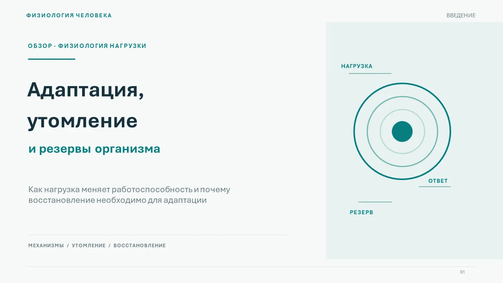
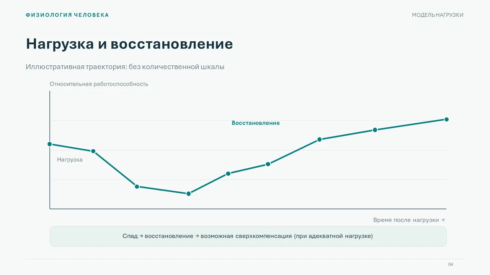

Визуальная
Для эффектной подачиСложные композиции и графика. Может выглядеть эффектнее, но текст внутри слайда-картинки отдельно не изменить.
Учебные, научные и деловые презентации в PowerPoint. Выберите формат и опишите задачу — стоимость и срок обсудим до начала работы.
Сложные композиции и графика. Может выглядеть эффектнее, но текст внутри слайда-картинки отдельно не изменить.
Текст и основные объекты можно менять в PowerPoint. Дизайн тоже может быть красивым; часть графики останется изображениями.
В обоих вариантах можно переставлять и удалять целые слайды. В визуальном варианте отдельные буквы, числа и иллюстрации внутри картинки не редактируются без переработки. В редактируемом варианте текст, фигуры и основные диаграммы могут оставаться самостоятельными объектами; сложные эффекты и фотографии могут быть изображениями.
Можно заказать обе версии, но это дополнительный объём работы: внешний вид, стоимость и состав файлов обсуждаются отдельно. Не всякий эффект можно перенести в полностью редактируемую форму один в один.

Пример редактируемого PPTX Физиология человека · 5 слайдов · учебный демонстрационный проект, не заказ клиента. Посмотреть ещё слайд
Пример показывает один из возможных стилей. В исходном PowerPoint текст и фигуры выполнены отдельными объектами. Для других тем и визуального формата дизайн подбирается индивидуально.
3 шага. Отправка заявки бесплатная и ни к чему не обязывает.
Заявка не сохраняется на сайте. Информация формируется в браузере и попадает в Telegram только если вы отправите подготовленное сообщение. Telegram — сторонний сервис; перед отправкой учитывайте его условия. Не включайте в заявку пароли, паспортные данные, медицинские документы и конфиденциальную информацию. Для изменения или удаления информации из переписки обратитесь в чат к исполнителю.
Отправка заявки не означает оплату или подтверждение заказа: стоимость, сроки, число правок и состав файлов согласуются в переписке. Загрузка файлов на этом сайте не предусмотрена.